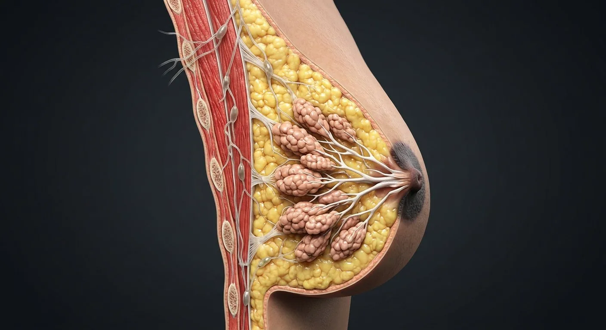

ORGAN → UNDER THE LENS
Mammary terminal duct and acini
Tap to compare the organ region with a tissue-level teaching illustration.
Read about Lobules (glandular) ↓A modified sweat gland: glandular lobules make milk, ducts carry it, fat gives shape, and lymph drains mostly to the axilla — which is why breast cancer staging checks axillary nodes.

Skin & subcutaneous layerSuspensory (Cooper) ligamentsAdipose tissueLobules (glandular)Retromammary spacePectoral fasciaPectoralis majorInternal mammary nodesAxillary lymph nodesLactiferous ductsLateral thoracic arteryAreolaSubareolar lactiferous ductsNippleSubareolar lymphatic plexusIntercostal perforatorsFemale breast in cut-away with every ductal and structural part; the male breast is the same blueprint, undeveloped.
These are educational cutaways, not literal magnifications of an organ pixel or laboratory slides. A ring marks the approximate tissue region; part-specific lines appear only where identifiable.
Tap to compare the organ region with a tissue-level teaching illustration.
Read about Lobules (glandular) ↓These 16 structures describe anatomy related to the chapter’s regional illustration. Each entry separates location, function and a clinical point.
Secretory alveolar clusters at duct ends.
What it doesMilk production under prolactin.
Clinical connectionMost breast cancers start in lobules or ducts.
15–20 branching channels to the nipple.
What it doesTransport milk.
Clinical connectionDuctal carcinoma in situ stays inside this lining.
Branching ducts converge near the nipple; classic large lactiferous sinuses are not consistently seen on ultrasound.
What it doesCarry milk from alveoli and lobules toward nipple openings, rather than acting as a major storage reservoir.
Clinical connectionA blocked duct may cause a localized tender area; ultrasound revised the older “sinus reservoir” model.
Pigmented projection with 15–20 duct openings.
What it doesMilk delivery; erotic sensation.
Clinical connectionPaget's disease: eczema-like nipple change = cancer until proven otherwise.
Pigmented ring with sebaceous Montgomery tubercles.
What it doesLubrication and latch cue.
Clinical connectionTubercles enlarge in pregnancy.
Fat between glandular compartments.
What it doesSize and contour.
Clinical connectionMammography reads density of fat vs gland.
Fibrous bands from skin to deep fascia.
What it doesStructural support.
Clinical connectionTumour invasion shortens them → skin dimpling.
Fan-shaped chest muscle deep to the breast.
What it doesBase on which the breast rests.
Clinical connectionAdvanced cancer can fix the breast to it.
75% of breast lymph drains here.
What it doesImmune surveillance of the breast.
Clinical connectionSentinel node biopsy stages cancer spread.
Thin skin over fat and gland.
What it doesBarrier and sensation.
Clinical connectionSkin oedema → peau d'orange in inflammatory cancer.
Loose plane between posterior breast and pectoral fascia.
What it doesPermits some mobility over thoracic wall.
Clinical connectionFixation to deep tissue can change breast movement.
Deep investing fascia over pectoralis major beneath breast tissue.
What it doesForms posterior relation of mammary gland.
Clinical connectionChest-wall involvement differs from superficial skin change.
Lymphatic network associated with nipple–areola region and breast drainage.
What it doesRoutes lymph toward axillary and parasternal basins.
Clinical connectionBreast drainage is variable; no single route fits all.
Parasternal nodes along internal thoracic vessels.
What it doesReceive part of medial breast lymphatic drainage.
Clinical connectionRelevant to regional staging.
Axillary branch contributing blood to lateral breast and chest wall.
What it doesSupplies lateral glandular tissue.
Clinical connectionVascular pattern differs by individual.
Branches of internal thoracic and intercostal vessels crossing chest wall.
What it doesSupply medial and deep breast regions.
Clinical connectionImportant for reconstructive blood supply.
These 4 additional entries give anatomical context. They are deliberately not assigned a photographic pin on the regional image.
Small duct and associated glandular acini forming a functional breast unit.
What it doesProduces milk in lactation and drains into larger duct tree.
Clinical connectionMany breast lesions arise in this region.
Secretory epithelial units surrounded by myoepithelial cells.
What it doesSynthesize milk constituents under hormonal control.
Clinical connectionArchitecture changes across life and pregnancy.
Contractile cells between secretory epithelium and basement membrane.
What it doesRespond to oxytocin to expel milk.
Clinical connectionTheir presence aids histologic distinction in lesions.
Contractile layer surrounding many ducts beneath epithelial cells.
What it doesHelps milk movement and maintains duct boundary.
Clinical connectionLoss of myoepithelial layer is important in invasion assessment.
Short answers grounded in the structures described above. Use the illustrated guide for anatomical context.
Breast tissue includes glandular lobules, a branching duct network, connective-tissue support, fat, vessels and nerves. Ducts open at the nipple.
No. Lobules contain milk-producing units; ducts transport secretions toward the nipple. Both are embedded in supporting connective and fatty tissue.
Secretory alveolar clusters at duct ends. Function: Milk production under prolactin.
15–20 branching channels to the nipple. Function: Transport milk.
Function: Immune surveillance of the breast. 75% of breast lymph drains here.
Follow these connected structures and body systems in the illustrated atlas.
 Female reproductive systemA cyclic system: ovulation, fertilisation in the tube, implantation in the endometrium.↗
Female reproductive systemA cyclic system: ovulation, fertilisation in the tube, implantation in the endometrium.↗ Ovary & uterine tubeFrom follicular cortex to ampulla: the ovary, fimbriae, tubal mucosal folds and the hidden routes of fertilization.↗
Ovary & uterine tubeFrom follicular cortex to ampulla: the ovary, fimbriae, tubal mucosal folds and the hidden routes of fertilization.↗ Lymphatic systemThe body's drainage and defence network: interstitial fluid returns as lymph, filtered node by node, while immune cells patrol.↗
Lymphatic systemThe body's drainage and defence network: interstitial fluid returns as lymph, filtered node by node, while immune cells patrol.↗General anatomy references and related source chapters for continued study. These links do not make the digital illustrations clinical images or certify every anatomical variant.
This educational page is not medical advice and has not undergone formal clinical peer review. Spotted an error? Contact the editor.
Open the realistic interactive plate, label lines, focus view and self-test.